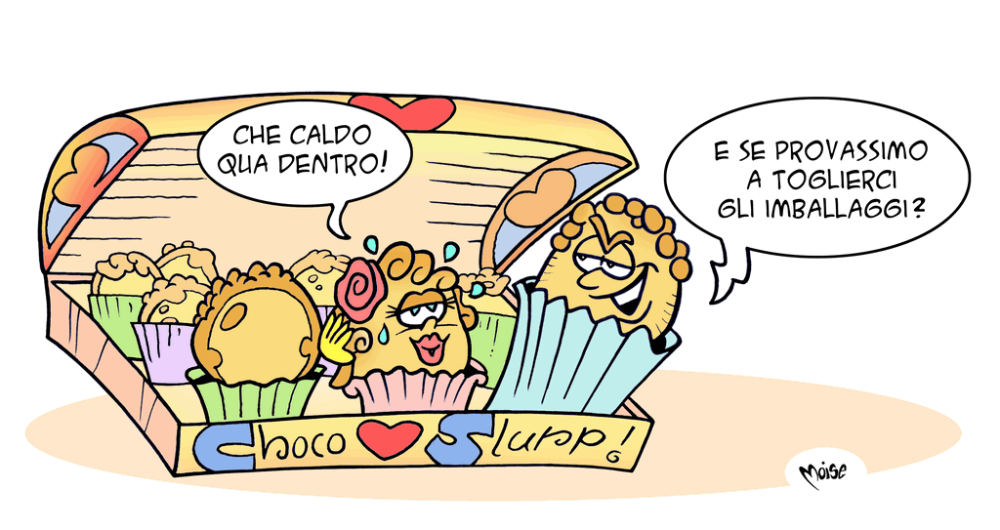
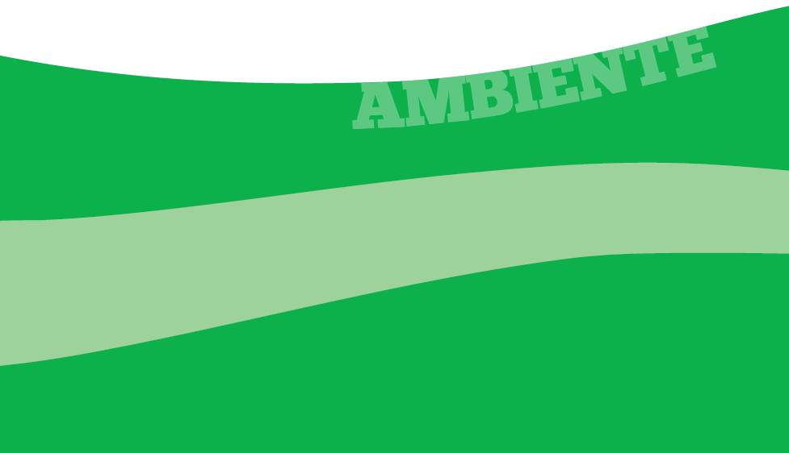
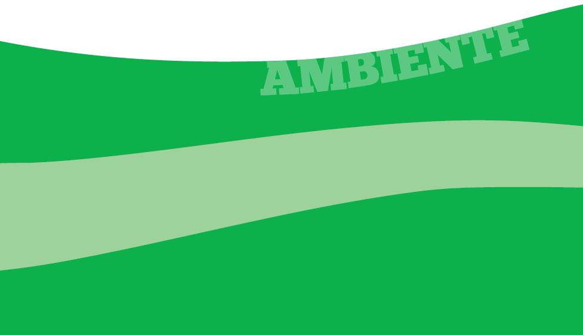

Riduciamoli!

Nel supermarket dello spreco le abitudini sono davvero
pessime. Vengono consegnati sacchetti non
biodegradabili, le confezioni dei prodotti sono sempre
eccessive, abbondano gli imballaggi in polistirolo.
Il packaging è progettato per attirare il consumatore
più che per conservare il prodotto in modo
adeguato!
Ad esempio a noi è capitato di acquistare una scatola
che conteneva 20 cioccolatini. La scatola conteneva
boeri, gianduiotti, cremini e praline, 5 per ogni
tipo.
Ciascun cioccolatino, avvolto nella carta stagnola, era
poi confezionato in una bustina. Ogni gruppo di cioccolatini
era diviso dagli altri e inserito in scatolette di
colore diverso: la scatoletta dei boeri, dei gianduiotti e
delle praline.
Riesci a calcolare a mente, senza l'ausilio di carta e
matita, quanti sono in tutto i contenitori, di qualsiasi
tipo, che ci siamo portati inutilmente a casa
quando abbiamo acquistato questa scatola di cioccolatini?


 
